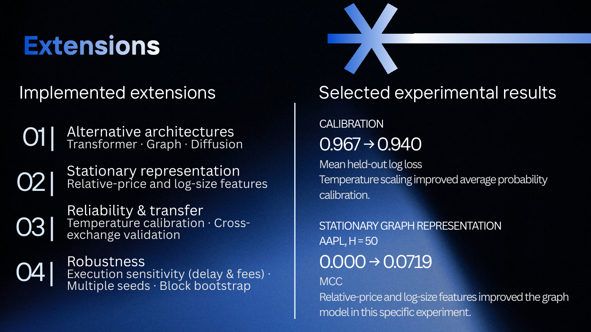

lob forecasting lab
deep limit order book forecasting · reproduction and extensions
research site · readme page · notebook · presentation · slide gallery · 27-view dashboard
7 order books / 4 neural architectures / 3 horizons / 27 interactive views
the supplied research film, converted to a silent, looping gif · silent mp4
can a model predict the next price move and still produce a poor trading signal? this study follows a limit order book from raw updates to directional forecasts, then evaluates the timing of complete predicted transactions.
based on deep limit order book forecasting: a microstructural guide (2025). read the article · upstream lobframe framework
research scope: this is a public-data method reproduction and extension. the original licensed 15-stock, 2017–2019 panel is unavailable. the saved experiments use different dates, a smaller training budget and short contiguous evaluation windows. they do not reproduce the paper's numerical benchmark.
explore the study
| start here | what you will find |
|---|---|
| interactive research site | filter saved results by book, horizon, confidence and metric; inspect measured market characteristics |
| readme page | a readable web edition of this guide |
| executed notebook | visible model implementations, data lineage, experiments, tables and plotly graphs |
| round 1 · 18-slide presentation | the motivation, paper framework, architecture, findings and limitations |
| 27-view dashboard | an interactive gallery of all 27 views; download the offline html |
| reproduction guide | environment setup, data acquisition, cached replay and retraining |
| saved results | metrics, calibration, transfer, ablations, uncertainty and verification records |
from book updates to decisions
book updates / clean and align / 100 × 40 windows / purged splits / forecasts / classification and timing
we retain ten price/size levels on each side of the book. a 100-update historical window predicts the mid-price direction after 10, 50 or 100 book updates. horizons count events, rather than seconds. chronological boundaries purge overlapping inputs and future labels, and normalization uses training observations only.
the deeplob benchmark architecture
 three convolution blocks extract spatial and temporal patterns, inception branches combine scales, and an lstm maps the sequence to three class probabilities. transformer, graph/gru and conditional diffusion alternatives are independently implemented alongside prior, persistence and logistic baselines.what the saved experiments show
means below give equal weight to the 21 asset/horizon combinations across five stock books and two crypto snapshot samples, at confidence threshold 0.3. higher mcc, macro f1 and transaction overlap are better. undefined transaction overlaps are omitted from that column's mean.
| model | mean mcc | macro f1 | transaction overlap |
|---|---|---|---|
| logistic | 0.1191 | 0.3151 | 0.0181 |
| persistence | 0.0909 | 0.4029 | 0.0675 |
| transformer | 0.0766 | 0.2747 | 0.0093 |
| deeplob | 0.0160 | 0.2325 | 0.0055 |
| graph + gru | 0.0035 | 0.2099 | 0.0021 |
| conditional diffusion | 0.0014 | 0.2006 | 0.0047 |
| class prior | 0.0000 | 0.2517 | 0.0000 |
the logistic baseline has the highest average mcc, while persistence has the highest transaction overlap. the saved study therefore supports evaluating classification and signal timing separately. these averages do not establish general superiority of an architecture.
transaction overlap compares complete directional sequences derived from predicted and true labels. it is not a fill probability or a profitability measure. the first 4,096 eligible test windows span approximately 12 seconds to 13 minutes, depending on the book. the original paper's full-day results are a separate reference.
data behind the table · exact evaluation intervals · microstructure audit
extensions beyond the benchmark
| extension | question it investigates |
|---|---|
| relative prices and log sizes | does a more stationary representation help the graph model? |
| graph-edge ablation | do the connections add information beyond the same node features? |
| temperature calibration | are predicted probabilities reliable on held-out observations? |
| cross-exchange transfer | can a model transfer between real binance and coinbase snapshots? |
| fee and delay sensitivity | how sensitive are assumed execution outcomes to friction and timing? |
| seeds, bootstrap and training budget | how stable are results to sampling uncertainty and compute? |
| daily forecasting | do separate daily-bar models generalize across 2024 and 2025? |

daily bars form a separate experiment and are never substituted for order books. the licensed-archive adapter is supplied but has not been run against the unavailable original dataset. full protocol and limitations
reproduce
use python 3.10. requirements.txt and requirements.lock record the publication validation runtime. the supplied run environment is preserved in environment/archived-requirements.txt; exact numerical replay can depend on package and platform versions.
git clone https://github.com/khaamr/lob-forecasting-lab.git
cd lob-forecasting-lab
python3.10 -m venv .venv
source .venv/bin/activate
python -m pip install -r requirements.txt
python -m ipykernel install --user --name lob-research --display-name 'lob research'
python -m pytest -q tests
open the notebook with the lob research kernel. its first data cell downloads missing public inputs. the repository includes saved model outputs, checkpoints and the executed notebook; raw vendor data must be acquired separately. the downloader writes hashes, which are checked before the data are used.
for the command-line pipeline and full retraining, see the reproduction guide. to review without downloading data or training, open the presentation, notebook outputs or offline dashboard.
data and provenance
- stock books: official lobster public samples for aapl, amzn, goog, intc and msft on 2012-06-21; ten levels and matching messages.
- crypto books: the first 60,000 captured binance and coinbase bitcoin snapshots on 2024-01-01; ten levels retained.
- daily extension: adjusted stock/qqq daily bars during 2022–2025, kept separate from the event-level task.
archived source manifests · official lobster samples · tardis sample documentation · upstream revision
vendor inputs and the third-party reference checkout are excluded from this repository. the original article is linked above; the round 1 presentation is included as supplied.
practical use cases
| scenario | what this study helps resolve |
|---|---|
| choosing an architecture | compare four neural models with logistic, persistence and prior baselines before committing more compute; the saved logistic baseline leads average mcc |
| reviewing a seemingly accurate forecast | inspect mcc, macro f1 and class balance together; stable labels dominate some short test intervals |
| setting a confidence threshold | inspect how filtering changes skill and retained coverage; undefined metrics stay undefined rather than becoming zero |
| studying signal timing | compare classification with complete transaction overlap; directional skill does not establish well-timed execution or profitability |
| moving between markets | inspect spread regimes and cross-exchange transfer before assuming a signal generalizes |
| reviewing or teaching the reproduction | use the site, readme page, executed notebook and all 27 original interactive views without retraining |
website and media
the responsive research site follows the supplied dark prototype, with cyan and mint accents. its explorer reads the existing results/metrics.csv directly. market details use results/microstructure.csv and results/evaluation_windows.csv. there is no fabricated live feed or browser-based neural inference.
the original dashboard, notebook, presentation, checkpoints, research scripts and scientific tests remain available. the homepage replaces the old redirect; research_dashboard.html keeps the full 27-view gallery. the film is illustrative project media, not experimental evidence.
the supplied ten-second video is preserved visually in assets/research-film.mp4 with its audio stream removed. assets/research-film.gif contains the same full sequence at 800 × 450 and 12 frames per second, loops indefinitely and has no audio. github renders the gif inline; the website uses the smaller silent mp4 with a pause control and respects reduced-motion preferences.
preview the website from the repository root:
python3 -m http.server 8000
open http://localhost:8000. the site needs no build or javascript package installation. its csv-backed interactions require an http server rather than opening index.html as a file.
validate the website's metric calculations:
node --test tests/site.test.mjs
after editing this readme, regenerate its web edition with the optional authoring dependency:
python -m pip install markdown
python scripts/build_readme.py